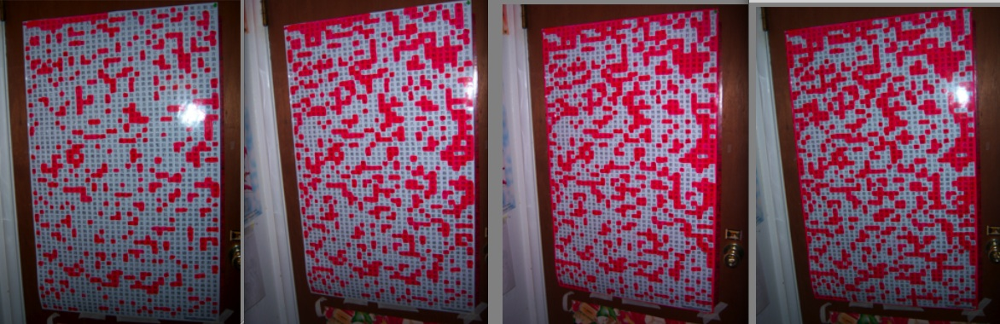

A reader named Kaba shares her AJATT success story. Yay!
Hello there Khatzumoto~ though I’ve only commented once on your blog (by the name of Kaba), AJATT has almost taken over my life. ¬†It literally will when I quit my English-heavy preschool teaching job in August [Khatzunote-o: this was written back in June]. ¬†Anyway, my story mostly consists of how I found success through any little thing I could find to motivate myself.
Working my way through Heisig seemed as natural and ordinary as it could’ve been. There were two main sources of motivation in this stage:
1. Bragging family and friends’ ears off about my progress (“I was at 1200 last week, and now I’m at 1550,” for example. ¬†I became a little too happy with the “wow”s and such). I’m just not too sure what to say about how this bragging business involves English-speaking. Anyhoo…
2. Recording this progress on a calendar. Each day, whatever kanji number I was at was written on the respective calendar day. ¬†If Tuesday’s number on the calendar was the same as Monday’s, I’d become ashamed and make sure such a thing wouldn’t repeat itself. ¬†Seeing the difference in numbers between each day was a nice concrete form of motivation. ¬†Also, setting a “last day of Heisig” date was effective since I was always trying to see how many days or weeks before the date I could finish, just to be extra proud of myself and all. ¬†Almost each day I would surpass my daily average amount of kanji, just so I could happily watch my deadline move up.
Now, in the sentence stage, I’m using pretty much the same forms of motivation.
The Kanji Poster: This combines both physical evidence of progress and the ability to show off (though more humbly this time). ¬†Here is what I do: Each time I learn a new kanji reading I write the kanji down on an index card. ¬†By the end of the week, the card is filled with kanji that I am now able to fill in with a red marker on the kanji poster. ¬†Once the whole poster is red, I will have accomplished my goal. ¬†This definitely brings on determination to learn more readings, and anyone who passes through my room is bound to say, “Hey, your poster there is lookin’ pretty red if I do say so myself ;)” ¬†Take a picture of your reddening (or greenening or purpling) kanji poster each week and you’ll truly see your progress.

It’s fun to watch them merge into large blobs of blushing kanji.
My last key to my success is entirely different, and something I just recently started. ¬†I’ve found that swapping emails with a native Japanese speaker does wonders for reading comprehension, knowledge of readings and all the other abilities that seem to appear magically. ¬†And, it puts the pressure on you to truly make an attempt understand what’s being said. ¬†It’s easy to give up when there isn’t another party on the other end waiting for your response, but when you know you can’t leave the other guy hanging, there’s an automatic need to respond with something related to the kanji after kanji of email that was sent to you (and if you’re typing in Japanese, ask for your native speaker friend to correct your mistakes). ¬†I’ve exchanged about 20 emails so far and now I find myself speed-reading even furigana-less manga…
Working full time has bought me some nice media to pull sentences from, but it has me on a slow pace. My “stats” are as follows: 560 sentences in 2 months, 200 of which were done on my one week vacation.¬† So guess what? Bye bye job üôÇ
To sum it up, my success is muchly due to shameless bragging, concrete evidence of progress, and situations where one must must must understand the Japanese that’s laid out in front of one’s face (and plenty of time away from other obligations).¬† Whatever bit of motivation you can find with undoubtedly lead to results, which will, in return, lead to motivation once again, and it repeats over and over from there.¬† Obviously there’s the constant audio-visual immersion as well, but what else can I say that Khatz hasn’t about that? üòõ
That’s her story üôÇ . If you’ve had success with the methods discussed on this website, please email me about it! I can put it up here and it’ll inspire other people, and you’ll save me some writing!
I like the idea to color the Kanji poster with red marker as you learn readings. — I just woke up and was getting ready to start on Kanji 651 in Heisig’s book when I came across this. Most certainly motivating, it being first thing in the morning and all. — I can’t wait to share a success story of my own.
I’m not quite at the point that I think I can converse with anyone, but I’m getting there quickly. My problem is that I’m not a very social person at all… Making an random English penpal sounds like quite a task and scares me more than a little. Making a random Japanese one seems absolutely impossible.
Does anyone have any tips on how someone like me could meet a Japanese penpal? (Email penpal, of course.)
@ WC
I’m in a similar situation: even the prospect of social situations (of any kind) can make me extremely anxious. In DIRECT contrast to that is the simple fact that I love studying Japanese so much that I’m willing to do or try anything to improve upon my own skills and learn more about the language and Japanese culture. That’s the rub with learning a language…if you want to get better, you have to get out there and talk to (Japanese) people.
For someone like me the very idea is terrifying, but I sincerely WANT to do it, so that’s what I’m doing. I found a conversation partner and, even though I suck at speaking, I am getting used to making mistakes and trying to learn from them. As a result I’ve been getting better with the whole social thing in general. It’s great for me, since I love people even though I’m bad at talking to them. “Your biggest fear with be the rescue of you”, to quote Incubus (gasp a non-Japanese band!!).
So, for you, I’d say just go for it. I know, I know, it sounds impossible, but the trick is not to think about it! If you love learning Japanese, then it won’t matter if things somehow go awry with your first penpal – you’ll just get up and try again with another. A good place to start might be Lang-8, where you can practice writing some small things and get feedback. Just send friend invites to whoever shows up to correct your writing and maybe write an entry about looking for a penpal…see what happens from there. There are some really cool people on Lang-8. üôÇ
“Pushing a wheelbarrow is easy. Thinking about it is the hard part.” (Gosh I like my quotes today.) Ȇ뺵„Å£„Ŷ„Åè„ņ„Åï„ÅÑ„Å≠‚ô™
Oh, Khatzumoto mentions something for getting a penpal in this post:
www.alljapaneseallthetime.com/blog/make-friends-from-japan-the-smart-way-mylanguageexchangecom
My personal recommendation is using Japan-Guide’s personal ads. There is a place to post for language exchange, and, for the most part, it’s free. (It depends on who you try contacting. Some people will charge for language exchange in the form of tutoring (which you don’t need)). That site is here: japan-guide.com
In my experience in getting Japanese pen-pals, I’ve been successful with two people. I made friends with an older woman, around 30, and a friend that’s still in high school, 16. My point is, that there are people of all ages that want to do language exchange. They both have helped me a great deal.
Oh egads I botched one of my favorite quotes. This must be amended! üôÅ
“Your biggest fear WILL be the rescue of you.”
WC, Feel the fear and do it anyway! If you wait for fear to disappear before you do anything new, you will never do it. Go for it and when you realise you have done it, you will have improved yourself.
I’m guessing after you finished Heisig you still couldn’t read Japanese, did you do heisig RTK books 2 and 3 as well? and about how long did it take for you to get to the point you were able to read manga’s decently. My goal is mainly to be able to read/watch untranslated anime/manga. I’ve done some Heisig and I’m working through the Japanese in Mangaland series myself although I’ve “become aware” of a lot of Japanese grammar and how its out there, but not really learned it. I haven’t really made much progress myself considering about 400 in heisig plus just starting book 2 of Japanese in Mangaland. If anyone else is in a similar case feel free to respond ^^. Thanks ahead.
Hello there Randon,
Instead of using Heisig 2 and 3, I went straight into reading manga.
As for being able to read manga at a decent pace, it wasn’t really a question of “how long.” It was more like, “how many volumes.” The manga Marmalade Boy was my first all-in-Japanese manga from start to finish. It was mainly over the course of this 8 volume manga that got me to the point of being able to smoothly and more enjoyably read through one tankouban (at the half-point things felt pretty decent. By volume 8, even better). Prior to Heisig, I was able to read hiragana, though very slowly. You’ll be amazed at how going through just one volume of manga will increase your reading speed.
Keep in mind I still rely on a dictionary while reading. But as you get more reading in, the need to look up a word becomes more few and far between. üôÇ
You generally pick up the readings through something like osmosis, I suppose. heh.. once you can recognize the Kanji fairly well, just begin reading things and the readings will begin to stick. It’s a bit scary, as you’re never really sure if you’re learning (because it’s not systematic, and we’ve been taught that learning processes must be systematic).
This new knowledge of the Japanese meanings and readings will begin to replace those hundreds of useless stories in your head from Heisig. They just sort of naturally fall away, though most likely you’ll always resort to them for some problem Kanji that just won’t stick no matter what you do. Everyone has theirs, I think… like I said, I think this process is a bit scary as it actually feels like you’re forgetting things (but that stuff’s useless – as long as you can recognize and write the Kanji you want, don’t worry).
From the end of RTK onwards, there’s really no good way to quantify the knowledge you have.
I find it useful to review my reading comprehension with White Rabbit Press’s Kanji cards… they include several readings, as well as compounds. I just flip through them (when I’m somewhere I can’t be SRS’ing) and rattle off as many readings as I can. Then I look over the card – if I miss an important, I make a note of it somewhere, which is usually enough to make it stick.
I don’t read manga, really, so can’t comment on that – but I think it’s like reading an English comic and one of the guys saying “Whatcha talkin’ ’bout?” As English speakers, we can navigate that and fill in the gaps quite easily. Someone learning the language would be a little confused, I would think. “What’s the significance of this? Why do they need to make it shorter? Why can’t I find ‘Whatcha’ in my dictionary?!?” First you have to understand the basic sentence, then the dialogue-ified (err, yeah…) form.
That said, I think Manga stories are pretty straightforward usually which helps.
I’d say, don’t worry about how long it’ll take. If it’s your goal to read manga, just work at it until you can. I think having a “It takes 1 year” timeframe will probably make you a little lazy, and then disappointed when that 1 year mark rolls around and you’re not as you’d hope.
Had a question bout Heisig 1. How do you know if you have learned a kanji? Do you just make the story and move on then use the SRS to “learn” it eventually through repetition, or do you completely memorize it when you enter it and use the SRS as a refresh. I find that it is difficult for me to remember it the first time, but I feel I cant progress to the next kanji until I memorize completely, including writing, the one that came before since they build on each other. What worked best for everyone else? Im probably making it more difficult than it needs to be.
Also, Im taking JLPT in December and wanted some advice. Is it ok to use the SRS to learn kanji and vocab for the test if I havent gotten to it in Heisig yet?
eeeeeek. I posted right before the JLPT one. I didnt say JLPT . . . . Im not taking JLPT *cough* @_@ *waves hand* you did not read my JLPT comment . . .
Dazyrue;
You’re making it more difficult than it needs to be. It’s important to try to get the kanji in your head as you go, but there isn’t a terrible distinction between ‘learning/memorizing’ and the repetition. Just put it in there and go. And while the latter ones may build on the former ones, it’s not like building a house; piling more on top of a weak frame doesn’t collapse it, it reinforces what came before. So just go.
Although, you seem to talk like you’re learning the readings and vocabulary at the same time you’re progressing through Heisig, which isn’t really the best application of Heisig.
As for the JLPT, if you want to pass it, put whatever you need to into your SRS to do so. It’s a waste of time in the long run, but a lot of things are; everyone has their own goals, and they’re allowed to slow you down if you enjoy them.
Thanks for the advice üôÇ I understand. I guess I feel that if Im not memornizing it completely the first time I think Im being lazy and only half-assin it. Got in my head about learning a language “structure structure” and all that bad stuff. Kinda scary goin it alone, making your own rules. I will try it this way and see.
They dont give refunds, do they? *suck* Oh well, I have learned. Thanks again, Khatz!!
Hey,
I’m learning English and I wanted to know if any of you guys had an idea of how I could adapt the highlighting-the-kanjis method to English.
I’m in dire need of new vocab, and my motivation levels aren’t that high these days.
However, I didn’t quite get how to make the poster, so if anyone could explain that to me in a few lines, it’d be great üôÇ
Rose Tyler,
You’re -learning- English?
…you’re doing extremely well then XD
I’m trying to imagine an English version of the kanji picture, and the image is coming out rather interesting… hmm. The Japanese kanji poster is easy to make in that the language has a fixed set of popularly used kanji that form many different words… but English just has an alphabet that forms words. It’s quite hard to picture a method that would work, as listing words from the dictionary or something like that is completely out of the question. I’m really at a loss when it comes to something like that… sorry!
Yeah, I’d mark that one down as impossible.
It’s not like the Kanji poster actually represents vocabulary words…
You could just make a goal: Like, 2000 new words and then just mark in a square on a poster everytime you find a new word. But yeah, I don’t think that’d be so effective.
Sorry :/
What I am doing with vocabulary in Japan right now is keeping a list of every word that I have to use a dictionary for.
If you start doing this, try posting them on your wall. What I do is take groups of vocabulary words and make sentences out of them as this site with SRS suggests. After you are pretty confident with a vocabulary word you could cross it off or take it off your wall.
Get a white board or make a funky collage. Anything to keep your motivation up!
Ken,
That’s an really good idea~ Sometimes it takes me a few dictionary look-ups to get to the point where I can read a word in a sentence and identify it. Simply writing it might even be a enough to help with this, let alone seeing it on the whiteboard/wall every once in awhile.